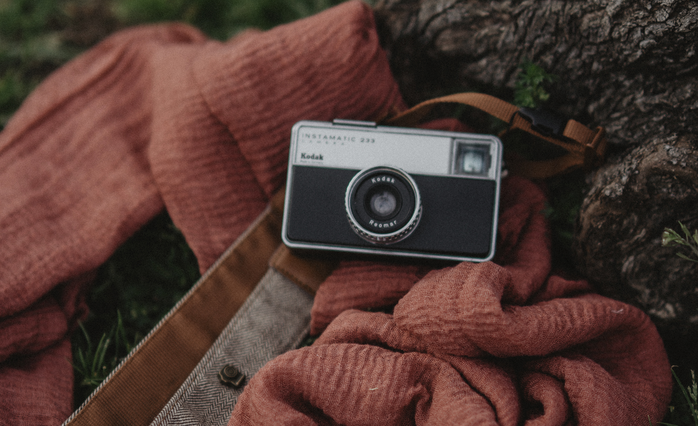

01
Portfolio
Instantes que cuentan historias.
Una selección de momentos reales, emociones y personas que he tenido la suerte de fotografiar.

Instantes que cuentan historias.
Una selección de momentos reales, emociones y personas que he tenido la suerte de fotografiar.